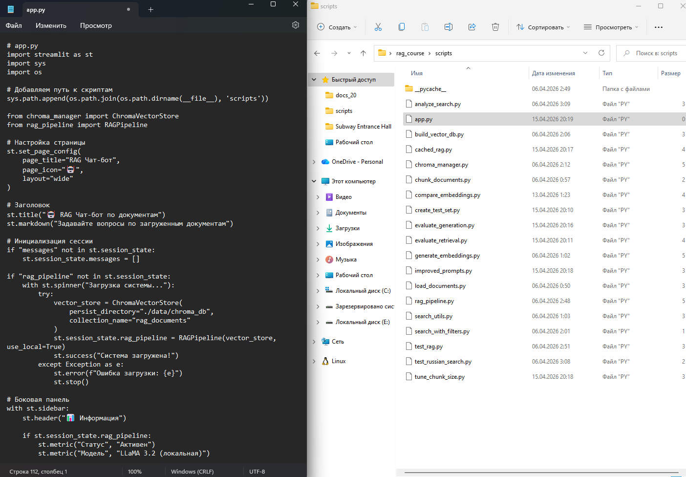
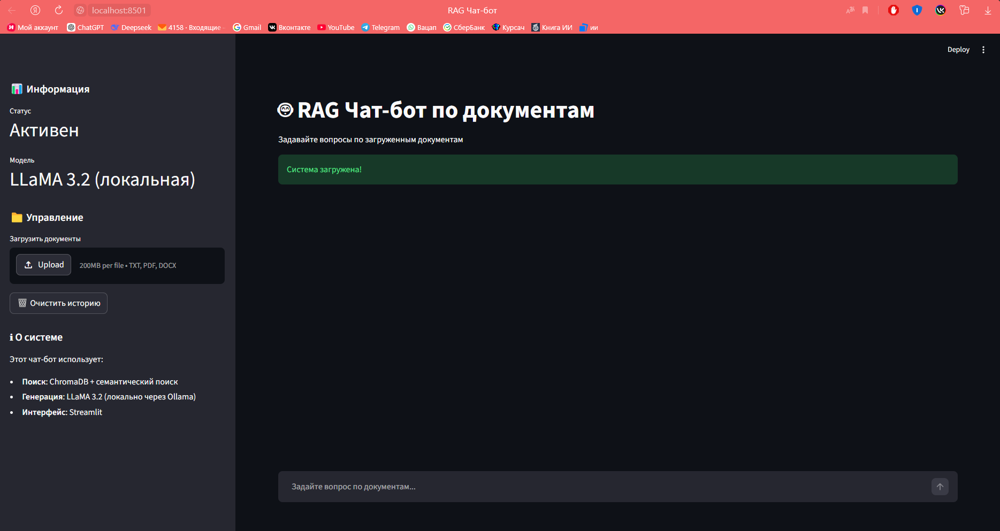
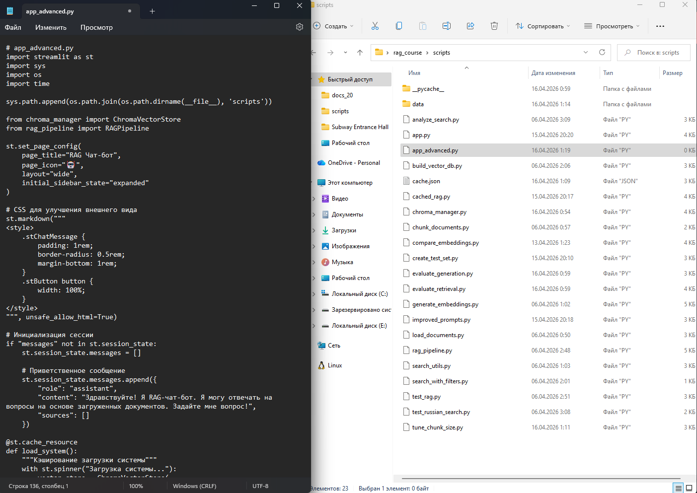
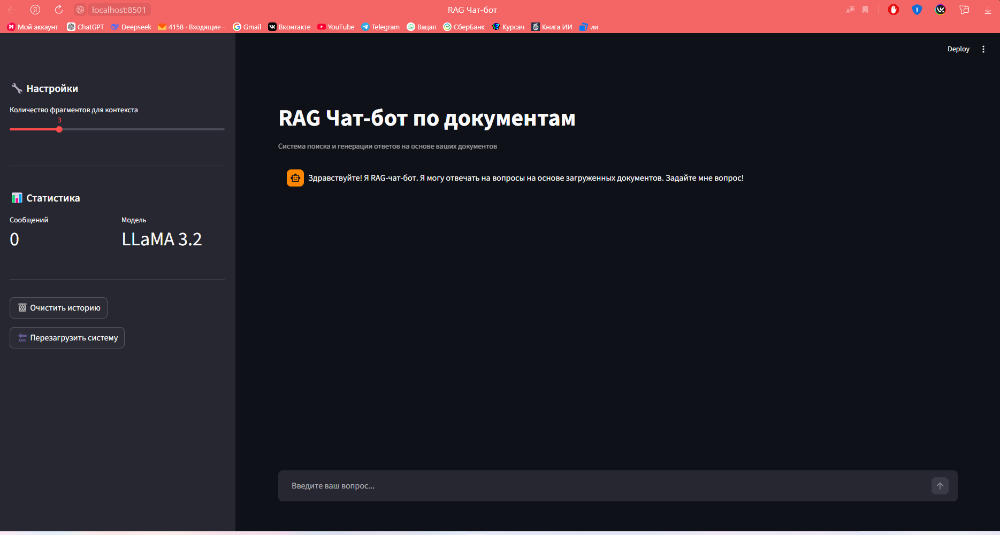
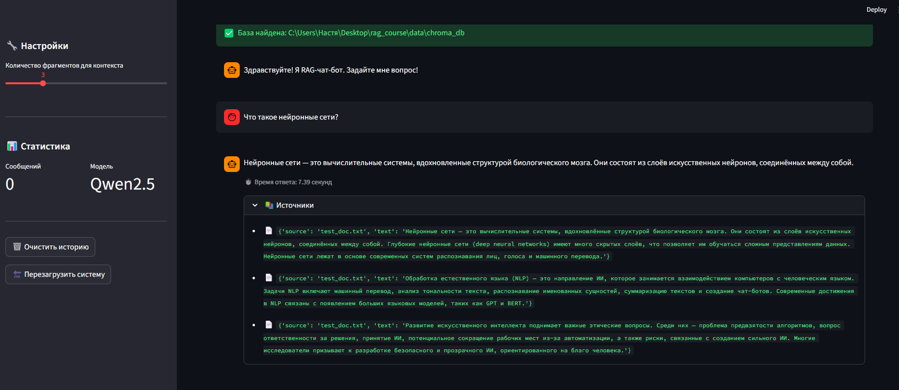

Методическое пособие №8. Создание веб-интерфейса на Streamlit
Цель занятия
Собрать все компоненты в готовое Streamlit-приложение для взаимодействия с RAG-системой
Продолжительность: 4 академических часа
Пошаговая инструкция
Теоретическое введение
Streamlit - это Python-библиотека для быстрого создания веб-интерфейсов для приложений машинного обучения. Она позволяет:
- Создавать чат-интерфейсы с историей диалога
- Загружать файлы через веб-интерфейс
- Отображать ответы в реальном времени
- Добавлять боковые панели для настроек
Основные компоненты Streamlit:
st.title()- заголовок страницыst.chat_message()- отображение сообщений в чатеst.chat_input()- поле ввода текстаst.sidebar- боковая панельst.session_state- хранение состояния между перезагрузкамиst.cache_resource- кэширование ресурсоёмких операций
Создайте файл app.py в корневой папке проекта:
# app.py
import streamlit as st
import sys
import os
# Добавляем путь к скриптам
sys.path.append(os.path.join(os.path.dirname(__file__), 'scripts'))
from chroma_manager import ChromaVectorStore
from rag_pipeline import RAGPipelineИмпортируются библиотеки Streamlit для создания веб-интерфейса, sys и os для работы с путями. Путь к папке scripts добавляется в системный путь, чтобы можно было импортировать модули проекта. Затем импортируются классы для работы с векторной базой данных и RAG-пайплайном.
# Настройка страницы
st.set_page_config(
page_title="RAG Чат-бот",
page_icon="🤖",
layout="wide"
)
# Заголовок
st.title("🤖 RAG Чат-бот по документам")
st.markdown("Задавайте вопросы по загруженным документам")Настраивается внешний вид веб-страницы: заголовок вкладки браузера, иконка и широкий макет. Затем отображается главный заголовок приложения и краткое описание.
# Инициализация сессии
if "messages" not in st.session_state:
st.session_state.messages = []
if "rag_pipeline" not in st.session_state:
with st.spinner("Загрузка системы..."):
try:
vector_store = ChromaVectorStore(
persist_directory="./data/chroma_db",
collection_name="rag_documents"
)
st.session_state.rag_pipeline = RAGPipeline(vector_store, use_local=True)
st.success("Система загружена!")
except Exception as e:
st.error(f"Ошибка загрузки: {e}")
st.stop()Инициализируются переменные состояния сессии Streamlit: messages для хранения истории диалога и rag_pipeline для хранения экземпляра RAG-пайплайна. При первой загрузке страницы отображается индикатор загрузки, создаётся подключение к векторной базе данных, инициализируется RAG-пайплайн.
# Боковая панель
with st.sidebar:
st.header("📊 Информация")
if st.session_state.rag_pipeline:
st.metric("Статус", "Активен")
st.metric("Модель", "Qwen2.5 (локальная)")В боковой панели создаётся раздел с информацией о системе. Отображаются метрики: статус системы ("Активен") и используемая модель ("Qwen2.5 (локальная)").
st.header("📁 Управление")
uploaded_files = st.file_uploader(
"Загрузить документы",
type=["txt", "pdf", "docx"],
accept_multiple_files=True
)
if uploaded_files:
st.info(f"Загружено {len(uploaded_files)} файлов")
if st.button("🗑️ Очистить историю"):
st.session_state.messages = []
st.rerun()Создаётся виджет для загрузки файлов (поддерживаются форматы txt, pdf, docx). При загрузке файлов выводится информация о количестве загруженных файлов. Добавляется кнопка для очистки истории диалога - при нажатии список сообщений обнуляется и страница перезагружается.
st.header("ℹ️ О системе")
st.markdown("""
Этот чат-бот использует:
- **Поиск**: ChromaDB + семантический поиск
- **Генерация**: Qwen2.5 (локально через Ollama)
- **Интерфейс**: Streamlit
""")В боковой панели добавляется раздел с описанием технологий, используемых в чат-боте: поиск на основе ChromaDB и семантического поиска, генерация через локальную модель Qwen2.5 (Ollama), интерфейс на Streamlit.
# Отображение истории сообщений
for message in st.session_state.messages:
with st.chat_message(message["role"]):
st.markdown(message["content"])
# Показываем источники для ответов ассистента
if message["role"] == "assistant" and "sources" in message:
with st.expander("📚 Источники"):
for source in message["sources"]:
st.caption(f"📄 {source}")Перебираются все сообщения в истории диалога. Каждое сообщение отображается в соответствующем стиле (пользователь или ассистент). Для ответов ассистента создаётся раскрывающийся блок "Источники", в котором перечисляются документы, использованные для генерации ответа.
# Поле ввода
if prompt := st.chat_input("Задайте вопрос по документам..."):
# Добавление сообщения пользователя
st.session_state.messages.append({"role": "user", "content": prompt})
with st.chat_message("user"):
st.markdown(prompt)Создаётся поле для ввода текста. Когда пользователь отправляет вопрос, сообщение добавляется в историю и отображается в интерфейсе.
# Генерация ответа
with st.chat_message("assistant"):
with st.spinner("Поиск ответа..."):
try:
result = st.session_state.rag_pipeline.answer_question(prompt)
response = result['answer']
sources = result['sources']
st.markdown(response)
with st.expander("📚 Источники"):
for source in sources:
st.caption(f"📄 {source}")
# Сохранение ответа
st.session_state.messages.append({
"role": "assistant",
"content": response,
"sources": sources
})
except Exception as e:
st.error(f"Ошибка: {e}")Показывается индикатор загрузки, вызывается RAG-пайплайн для получения ответа на вопрос. Из результата извлекаются ответ и источники. Ответ отображается в интерфейсе, ниже добавляется раскрывающийся блок с источниками. Ответ сохраняется в историю диалога вместе с источниками.

streamlit run app.pyСоздайте файл .streamlit/config.toml:
# .streamlit/config.toml
[theme]
primaryColor = "#1f77b4"
backgroundColor = "#ffffff"
secondaryBackgroundColor = "#f0f2f6"
textColor = "#262730"
font = "sans serif"
[server]
maxUploadSize = 100
enableXsrfProtection = true
enableCORS = false
[browser]
gatherUsageStats = falseДобавьте функцию загрузки документов в app.py (в боковую панель):
# Добавьте в боковую панель после uploaded_files
if uploaded_files:
if st.button("📥 Добавить в базу знаний"):
from scripts.load_documents import load_all_documents
from scripts.chunk_documents import chunk_documents
# Сохранение загруженных файлов
saved_files = []
for uploaded_file in uploaded_files:
file_path = os.path.join("./documents", uploaded_file.name)
with open(file_path, "wb") as f:
f.write(uploaded_file.getbuffer())
saved_files.append(file_path)
st.success(f"Сохранено {len(saved_files)} файлов")
st.info("Для добавления в базу знаний перезапустите систему")cd C:\Users\%USERNAME%\Desktop\rag_course
.\venv\Scripts\activate
streamlit run app.pyПриложение откроется в браузере по адресу http://localhost:8501.

Создайте расширенную версию app_advanced.py:
# app_advanced.py
import streamlit as st
import sys
import os
import time
sys.path.append(os.path.join(os.path.dirname(__file__), 'scripts'))
from chroma_manager import ChromaVectorStore
from rag_pipeline import RAGPipelineИмпортируются библиотеки Streamlit для веб-интерфейса, sys и os для работы с путями, time для измерения времени ответа.
st.set_page_config(
page_title="RAG Чат-бот",
page_icon="🤖",
layout="wide",
initial_sidebar_state="expanded"
)
# CSS для улучшения внешнего вида
st.markdown("""
""", unsafe_allow_html=True)Настраивается внешний вид страницы: заголовок вкладки, иконка, широкий макет, развёрнутая боковая панель. Добавляются CSS-стили для улучшения отображения сообщений чата и кнопок.
# Инициализация сессии
if "messages" not in st.session_state:
st.session_state.messages = []
# Приветственное сообщение
st.session_state.messages.append({
"role": "assistant",
"content": "Здравствуйте! Я RAG-чат-бот. Я могу отвечать на вопросы на основе загруженных документов. Задайте мне вопрос!",
"sources": []
})Инициализируется состояние сессии: создаётся список messages для хранения истории диалога. Добавляется приветственное сообщение от ассистента, которое будет отображаться при первом запуске приложения.
@st.cache_resource
def load_system():
"""Кэширование загрузки системы"""
with st.spinner("Загрузка системы..."):
# Используем абсолютный путь к базе данных
base_dir = os.path.dirname(os.path.abspath(__file__))
db_path = os.path.join(base_dir, "data", "chroma_db")
vector_store = ChromaVectorStore(
persist_directory=db_path,
collection_name="rag_documents"
)
return RAGPipeline(vector_store, use_local=True)Создаётся функция load_system, декорированная @st.cache_resource. Это означает, что результат её выполнения будет кэшироваться Streamlit'ом, и при повторных запусках приложения система не будет загружаться заново. Используется абсолютный путь к базе данных.
def main():
st.title("🤖 RAG Чат-бот по документам")
st.caption("Система поиска и генерации ответов на основе ваших документов")
# Загрузка системы
rag_pipeline = load_system()В главной функции отображаются заголовок приложения и подпись. Вызывается функция load_system(), которая возвращает готовый к использованию RAG-пайплайн (с кэшированием).
# Боковая панель
with st.sidebar:
st.header("🔧 Настройки")
# Настройка количества результатов
n_results = st.slider("Количество фрагментов для контекста", 1, 10, 3)
st.divider()В боковой панели создаётся раздел с настройками. Добавляется ползунок для выбора количества фрагментов, которые будут передаваться в языковую модель как контекст (от 1 до 10, по умолчанию 3).
# Информация о системе
st.header("📊 Статистика")
col1, col2 = st.columns(2)
with col1:
st.metric("Сообщений", len(st.session_state.messages) // 2)
with col2:
st.metric("Модель", "Qwen2.5")
st.divider()Создаётся раздел со статистикой. Используются две колонки: в первой отображается количество сообщений в диалоге, во второй — название используемой модели.
# Управление
if st.button("🗑️ Очистить историю"):
st.session_state.messages = []
st.rerun()
if st.button("🔄 Перезагрузить систему"):
st.cache_resource.clear()
st.rerun()Добавляются две кнопки управления: "Очистить историю" (обнуляет список сообщений и перезагружает страницу) и "Перезагрузить систему" (очищает кэш и перезагружает страницу, принудительно перезагружая RAG-пайплайн).
# Отображение сообщений
for message in st.session_state.messages:
with st.chat_message(message["role"]):
st.markdown(message["content"])
if message["role"] == "assistant" and message.get("sources"):
if len(message["sources"]) > 0:
with st.expander("📚 Источники"):
for source in message["sources"]:
st.caption(f"📄 {source}")Перебираются все сообщения в истории диалога. Каждое сообщение отображается в соответствующем стиле. Для ответов ассистента создаётся раскрывающийся блок "Источники".
# Поле ввода
if prompt := st.chat_input("Введите ваш вопрос..."):
# Добавление сообщения пользователя
st.session_state.messages.append({"role": "user", "content": prompt})
with st.chat_message("user"):
st.markdown(prompt)
# Генерация ответа
with st.chat_message("assistant"):
with st.spinner("Поиск и генерация ответа..."):
start_time = time.time()
# Получение ответа
result = rag_pipeline.answer_question(prompt)
response = result['answer']
sources = result['sources']
elapsed = time.time() - start_timeСоздаётся поле для ввода текста. Когда пользователь отправляет вопрос, сообщение добавляется в историю и отображается. Затем запускается процесс генерации ответа: засекается время начала, вызывается RAG-пайплайн, вычисляется затраченное время.
st.markdown(response)
# Показываем время ответа
st.caption(f"⏱️ Время ответа: {elapsed:.2f} секунд")
# Отображение источников
if sources and len(sources) > 0:
with st.expander("📚 Источники", expanded=True):
for source in sources:
st.markdown(f"- 📄 `{source}`")
else:
st.info("📭 Источники не найдены")
# Сохранение ответа в историю
st.session_state.messages.append({
"role": "assistant",
"content": response,
"sources": sources
})Отображается ответ ассистента, под ним показывается время, затраченное на генерацию ответа. Добавляется раскрывающийся блок с источниками. Ответ сохраняется в историю диалога вместе с источниками.
if __name__ == "__main__":
main()Блок if __name__ == "__main__" запускает главную функцию при непосредственном выполнении скрипта.


Вопросы, на которые есть ответы в документах:
| № | Вопрос |
|---|---|
| 1 | Что такое искусственный интеллект? |
| 2 | Что такое машинное обучение? |
| 3 | Чем машинное обучение отличается от традиционного программирования? |
| 4 | Что такое нейронные сети? |
| 5 | Из чего состоят нейронные сети? |
| 6 | Чем вдохновлены нейронные сети? |
| 7 | Что такое ИИ? |

Проверьте, как работает приложение.
Задание для самостоятельного выполнения
- Добавьте в приложение возможность выбора модели LLM из выпадающего списка.
- Реализуйте отображение времени ответа и количества использованных токенов.
- Добавьте функцию экспорта истории диалога в JSON файл.
- Создайте возможность регулировки температуры (temperature) для управления креативностью ответов.
Контрольные вопросы
- Как Streamlit управляет состоянием приложения между обновлениями страницы?
- Что такое st.cache_resource и для чего он используется?
- Как добавить в Streamlit-приложение боковую панель?
- Почему в RAG-чате важно показывать источники информации?
- Как можно улучшить пользовательский опыт в RAG-чате?
Критерии оценки
| Критерий | Баллы |
|---|---|
| Создание базового Streamlit-приложения | 2 |
| Интеграция RAG-пайплайна с интерфейсом | 2 |
| Отображение истории диалога | 2 |
| Добавление боковой панели с настройками | 2 |
| Выполнено дополнительное задание | 2 |
Максимальный балл: 10